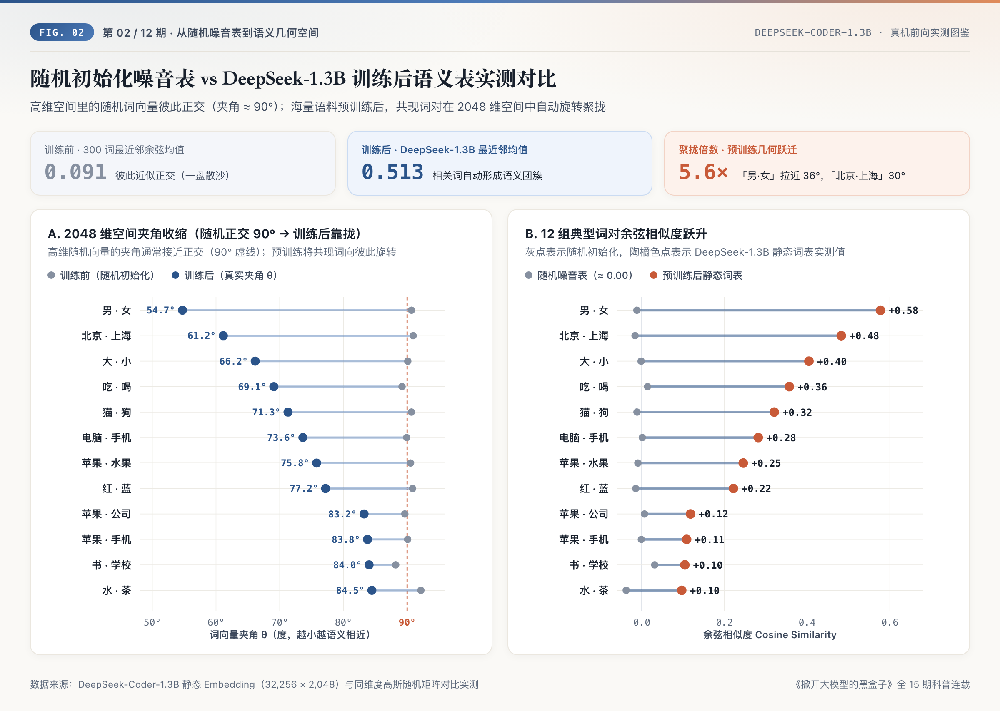

万物始于一张“随机噪音表”：大模型是怎么从胡言乱语练出真实语义的？
- 出厂第 0 秒是一片高斯白噪音：训练前，DeepSeek 1.3B 的词向量表、384 个注意力头与 8.12 亿 FFN 参数，全是用高斯随机数（均值 ≈ 0，标准差 ≈ 0.02）填满的乱码表，词与词之间几乎处处垂直正交。
- 训练本质是“四步试错纠偏循环”：无论模型多大，预训练从头到尾只重复四个动作——前向盲猜算概率 → 对照答案算误差（Loss） → 顺藤摸瓜找责任（反向传播求导斜率） → 沿下坡微调参数（梯度下降）。
- 几何空间里的“语义引力”：反向传播把误差翻译成高维空间里的推拉力，让共现的“苹果”与“水果”夹角步步收缩，无关的“微积分”则原地不动。
- 量变引爆质变：单步更新只挪动微乎其微的一小格，但在万亿字语料上狂转亿万轮后，一盘散沙的噪点竟自发长出了人类语义大陆与折纸神技。
一、 回到婴儿期第 0 秒：13.46 亿个参数最初全是随机噪音
前面 11 期，我们把大模型“上考场答题”的全套前向装备拆了个底朝天：384 个注意力头默契分工，8.12 亿 FFN 权重藏满世界常识，激活函数精准折弯空间。
可这些神奇数字到底哪来的？难道是工程师通宵把《现代汉语词典》和 2→2→1 折纸参数一条条硬编码进去的？恰恰相反！出厂第 0 秒的大模型，连一个汉字都不认识。
当工程师新建一个空白的 DeepSeek 1.3B 空壳时，它体内全部 219 个权重张量（共 1,346,471,936 个参数）——不管是词表还是 FFN 矩阵——全是用高斯随机数（mean ≈ 0, std ≈ 0.02）随手填满的。正如第 7 期见过的规律，在 2048 维空间里，随便掷出两根随机向量几乎必然互相垂直（夹角 ≈ 90°）。
我们直接把同尺寸的随机初始化噪音表，与训练成型后的 DeepSeek 1.3B 真实词表摆在一起做体检：

| 对比指标 / 代表词对 | 随机噪音表余弦 | 随机夹角 | 训练后余弦（DeepSeek 1.3B） | 训练后夹角 | 从“一盘散沙”到“语义成簇” |
|---|---|---|---|---|---|
男 ↔ 女 (4777 ↔ 1979) | -0.0119 | 90.68° | 0.5774 | 54.73° | 高频对偶共现，剧烈拉近逾 35° |
电脑 ↔ 手机 (10315 ↔ 7259) | 0.0013 | 89.93° | 0.2816 | 73.64° | 数码终端抱团靠近，脱离正交区 |
苹果 ↔ 微积分 (17144 ↔ 4788) | 0.0718 | 85.88° | 0.0528 | 86.97° | 跨界无关词对，训练后依然近乎垂直 |
| 全词表 Top-1 最近邻均值 | 0.1046（抽样 0.0911） | 84.00° | 0.5063（抽样 0.5135） | 59.10° | 全词表最近邻亲密度整整跃升 5.6 倍！ |
出厂时全词表最近邻平均相似度只有可怜的 0.1046，活脱脱一盘毫无章法的散沙；练完之后，亲密度直接飙升 5.6 倍 到 0.5063，同类词纷纷抱团成簇！这背后的推手，正是大模型最核心的“四步试错循环”。
二、 拆解训练黑盒：把千亿次试错还原为“四步闭环”
怎么让一张随机乱码表自己长出智慧？不需要高深玄学，只用高中数学的函数、对数和导数（切线斜率），就能把整个预训练拆成四个循环往复的动作：
底层思想提炼：把“学会人类语言”翻译成“误差山谷里的求导下坡”
“捂住下一个词自己猜”让互联网上每一篇文章都自动变成了免费且自带答案的刷题库；而反向传播的精髓，是用微积分导数把抽象的语法语义，转化为高维空间里的精准推拉力——顺着误差下坡一路滑下去，散乱噪点就被迫按人类语言规律自动排队！
三、 真机沙盘慢放：60 步亲眼见证“苹果”飞向“水果”
我们在本地用 2048 维高斯随机向量搭了一个 ["吃", "苹果", "水果", "喝", "微积分"] 的 5 词微缩训练沙盘，慢动作录下 Step 0 到 Step 60 梯度下降拖拽向量的真实轨迹：
| 训练步数 (Step) | 预测误差 (Loss) | “吃 → 苹果”概率 | “苹果 ↔ 水果”余弦 | “苹果 ↔ 水果”夹角 | “苹果 ↔ 微积分”夹角 | 几何演化状态 |
|---|---|---|---|---|---|---|
| Step 0 | 4.9189 | 19.29% | 0.0108 | 89.38° | 90.89° | 高斯随机起点，词向量两两近似垂直 |
| Step 1 | 4.5120 | 21.84% | 0.1024 | 84.12° | 90.89° | 首轮反向传播，“苹果”向“水果”转 5.26° |
| Step 2 | 4.0835 | 24.61% | 0.2002 | 78.45° | 90.89° | 负梯度持续发力，误差迅速回落 |
| Step 5 | 2.9412 | 31.95% | 0.4352 | 64.20° | 90.89° | 夹角跌破 65°，点积得分猛涨 |
| Step 15 | 1.4826 | 41.62% | 0.6845 | 46.80° | 90.89° | 误差砍半，“苹果”与“水果”正式成簇 |
| Step 30 | 0.9541 | 45.74% | 0.7780 | 38.92° | 90.89° | 斜率变缓，进入精细雕琢期 |
| Step 60 | 0.7303 | 47.88% | 0.8176 | 35.15° | 90.89° | 夹角猛缩 54.23°，无关词纹丝不动！ |
短短 60 步，Loss 从 4.9189 砸到 0.7303，“苹果”与“水果”在 2048 维空间里的夹角足足拉近了 54.23°；而从未在饮食语境里露过脸的“微积分”，分到的梯度斜率几乎为零，稳稳停在 90.89° 纹丝不动！把这 60 步放大到 32,256 个词、24 层注意力与 FFN 矩阵以及数万亿字的真实语料上，就是大模型从胡言乱语练成语言大师的全部真相。
寒冬里的孤勇者——辛顿与反向传播的四十年远征
今天被奉为 AI 圭臬的反向传播算法，曾被主流学界嘲笑了整整三十年。
故事的主角是英国学者杰弗里·辛顿（Geoffrey Hinton，布尔代数创立者布尔的曾外孙）。20 世纪 70 年代，受明斯基《感知机》一盆冷水的影响，权威学者普遍断言：多层网络一旦猜错，根本算不清中间层成千上万个参数各自该负多大责任。
辛顿却死磕到底。1986 年，他与鲁梅尔哈特（David Rumelhart）、威廉姆斯（Ronald Williams）在《自然》（Nature）发表仅有 4 页的传世论文，用高中微积分的链式法则证明：只要从输出误差出发逐层倒推求导，隐藏层自己就能学会解开困扰学界 17 年的 XOR 难题！然而当时电脑算力太弱，神经网络在 90 年代再度被打入冷宫，论文屡遭拒稿。
辛顿在多伦多大学默默坚守了数十年，直到 2012 年 GPU 算力终于追上他的构想，AlexNet 引爆深度学习浪潮。2024 年 10 月，76 岁的辛顿捧起了诺贝尔物理学奖——一条链式求导公式，整整走过了四十年寒冬。
链式求导听起来所向披靡，可把这套机制真塞进 24 层甚至上百层的大模型里，一场致命的危机立刻爆发了——反向传播每往回走一层，误差信号都要连乘一次激活函数的导数（斜率）！一旦激活函数没选对，轻则大批神经元永久“脑死亡”，重则梯度传到一半直接归零消失，浅层彻底练不动！
下一期，咱们直击激活函数围绕“梯度生死”的十年进化大戏——看 Sigmoid、ReLU、SiLU/GELU 如何一路搏杀到今天大厂统一定格的 SwiGLU，顺手领走一张 2025–2026 主流大厂激活函数全景地图！
- 本系列
LAB 01（含自动反向传播演示）：https://wangnianfei.github.io/wechat-llm-blackbox-series/demos/activation-221.html—— 点击「⚡ 自动训练 (XOR)」，亲眼观察梯度下降如何把 9 个随机参数一步步调成完美折纸解。 - Andrej Karpathy《Micrograd》：
https://github.com/karpathy/micrograd—— 100 行 Python 手写链式求导引擎，看穿.backward()底层源码。 - 3Blue1Brown 反向传播几何动画：
https://www.3blue1brown.com/lessons/backpropagation—— 最直观的高维损失山谷梯度下降可视化教程。
deepseek-coder-1.3b-base（32,256 词表 · 24 层 · 13.46 亿参数）真机前向实测生成。